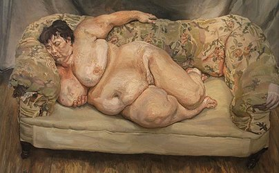

Benefits Supervisor Sleeping
Lucian Freud · 1995 · Oil on canvas · 151.3 × 219 cm · Private collection
In copyright. Look and learn: shown for study, not for download.
The sitter is Sue Tilley, a supervisor at a Jobcentre, who was introduced to Lucian Freud by the performer Leigh Bowery, already one of his models. Freud worked only from life and asked for long sittings, and he painted several large nudes of her between 1994 and 1996. He was seventy-two. In May 2008 the painting sold at Christie's in New York for $33.6 million to Roman Abramovich, then the highest price paid for a work by a living artist.